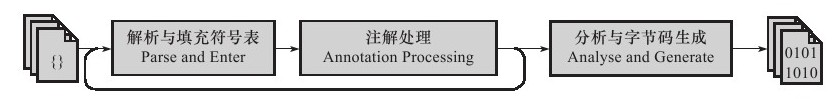
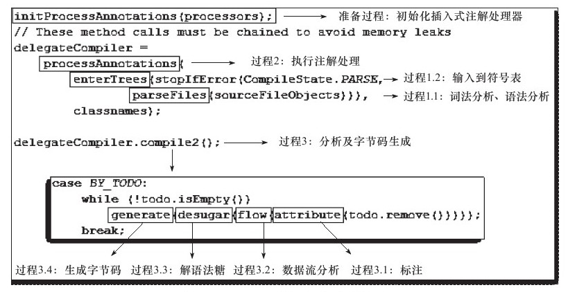

从Sun Javac的代码来看，编译过程大致可以分为3个过程:
- 解析与填充符号表过程。
- 插入式注解处理器的注解处理过程。
- 分析与字节码生成过程。

Javac编译动作的入口是com.sun.tools.javac.main.JavaCompiler类，上述3个过程的代码逻辑集中在这个类的compile()和compile2()方法中，整个编译最关键的处理就由图中标注的8个方法来完成，下面我们具体看一下这8个方法实现了什么功能。

解析与填充符号表
解析步骤由上图中的parseFiles（）方法（过程1.1）完成，解析步骤包括了经典程序编译原理中的词法分析和语法分析两个过程。
词法、语法分析
词法分析是将源代码的字符流转变为标记（Token）集合，单个字符是程序编写过程的最小元素，而标记则是编译过程的最小元素，关键字、变量名、字面量、运算符都可以成为标记，如“int a=b+2”这句代码包含了6个标记，分别是int、a、=、b、+、2，虽然关键字int由3个字符构成，但是它只是一个Token，不可再拆分。在Javac的源码中，词法分析过程由com.sun.tools.javac.parser.Scanner类来实现。
语法分析是根据Token序列构造抽象语法树的过程，抽象语法树（Abstract Syntax Tree,AST）是一种用来描述程序代码语法结构的树形表示方式，语法树的每一个节点都代表着程序代码中的一个语法结构（Construct），例如包、类型、修饰符、运算符、接口、返回值甚至代码注释等都可以是一个语法结构。
在Javac的源码中，语法分析过程由com.sun.tools.javac.parser.Parser类实现，这个阶段产出的抽象语法树由com.sun.tools.javac.tree.JCTree类表示，经过这个步骤之后，编译器就基本不会再对源码文件进行操作了，后续的操作都建立在抽象语法树之上。
填充符号表
完成了语法分析和词法分析之后，下一步就是填充符号表的过程，也就是enterTrees（）方法（过程1.2）所做的事情。符号表（Symbol Table）是由一组符号地址和符号信息构成的表格，可以把它想象成哈希表中K-V值对的形式（实际上符号表不一定是哈希表实现，可以是有序符号表、树状符号表、栈结构符号表等）。符号表中所登记的信息在编译的不同阶段都要用到
。在语义分析中，符号表所登记的内容将用于语义检查（如检查一个名字的使用和原先的说明是否一致）和产生中间代码。在目标代码生成阶段，当对符号名进行地址分配时，符号表是地址分配的依据。
在Javac源代码中，填充符号表的过程由com.sun.tools.javac.comp.Enter类实现，此过程的出口是一个待处理列表（To Do List），包含了每一个编译单元的抽象语法树的顶级节点，以及package-info.java（如果存在的话）的顶级节点。
注解处理器
在Javac源码中，插入式注解处理器的初始化过程是在
initPorcessAnnotations（）方法中完成的，而它的执行过程则是在processAnnotations（）方法中完成的，
这个方法判断是否还有新的注解处理器需要执行，如果有的话，通过com.sun.tools.javac.processing.JavacProcessingEnvironment类的doProcessing（）方法生成一个新的JavaCompiler对象对编译的后续步骤进行处理。
在JDK 1.5之后，Java语言提供了对注解（Annotation）的支持，这些注解与普通的Java代码一样，是在运行期间发挥作用的。在JDK 1.6中实现了JSR-269规范JSR-269：Pluggable Annotations Processing API（插入式注解处理API）。提供了一组插入式注解处理器的标准API在编译期间对注解进行处理，我们可以把它看做是一组编译器的插件，在这些插件里面，可以读取、修改、添加抽象语法树中的任意元素。如果这些插件在处理注解期间对语法树进行了修改，编译器将回到解析及填充符号表的过程重新处理，直到所有插入式注解处理器都没有再对语法树进行修改为止，每一次循环称为一个Round，也就是第一张图中的回环过程。 有了编译器注解处理的标准API后，我们的代码才有可能干涉编译器的行为，由于语法树中的任意元素，甚至包括代码注释都可以在插件之中访问到，所以通过插入式注解处理器实现的插件在功能上有很大的发挥空间。只要有足够的创意，程序员可以使用插入式注解处理器来实现许多原本只能在编码中完成的事情。
我们知道编译器在把Java程序源码编译为字节码的时候，会对Java程序源码做各方面的检查校验。这些校验主要以程序“写得对不对”为出发点，虽然也有各种WARNING的信息，但总体来讲还是较少去校验程序“写得好不好”。有鉴于此，业界出现了许多针对程序“写得好不好”的辅助校验工具，如CheckStyle、FindBug、Klocwork等。这些代码校验工具有一些是基于Java的源码进行校验，还有一些是通过扫描字节码来完成。我们将会使用注解处理器API来编写一款拥有自己编码风格的校验工具：NameCheckProcessor。
代码实现
要通过注解处理器API实现一个编译器插件，首先需要了解这组API的一些基本知识。我们实现注解处理器的代码需要继承抽象类javax.annotation.processing.AbstractProcessor，这个抽象类中只有一个必须覆盖的abstract方法：“process（）”，它是Javac编译器在执行注解处理器代码时要调用的过程，我们可以从这个方法的第一个参数“annotations”中获取到此注解处理器所要处理的注解集合，从第二个参数“roundEnv”中访问到当前这个Round中的语法树节点，每个语法树节点在这里表示为一个Element。在JDK 1.6新增的javax.lang.model包中定义了16类Element，包括了Java代码中最常用的元素，如：“包（PACKAGE）、枚举（ENUM）、类（CLASS）、注解（ANNOTATION_TYPE）、接口（INTERFACE）、枚举值（ENUM_CONSTANT）、字段（FIELD）、参数（PARAMETER）、本地变量（LOCAL_VARIABLE）、异常（EXCEPTION_PARAMETER）、方法（METHOD）、构造函数（CONSTRUCTOR）、静态语句块（STATIC_INIT，即static{}块）、实例语句块（INSTANCE_INIT，即{}块）、参数化类型（TYPE_PARAMETER，既泛型尖括号内的类型）和未定义的其他语法树节点（OTHER）”。除了process（）方法的传入参数之外，还有一个很常用的实例变量“processingEnv”，它是AbstractProcessor中的一个protected变量，在注解处理器初始化的时候（init（）方法执行的时候）创建，继承了AbstractProcessor的注解处理器代码可以直接访问到它。它代表了注解处理器框架提供的一个上下文环境，要创建新的代码、向编译器输出信息、获取其他工具类等都需要用到这个实例变量。注解处理器除了process（）方法及其参数之外，还有两个可以配合使用的Annotations：@SupportedAnnotationTypes和@SupportedSourceVersion，前者代表了这个注解处理器对哪些注解感兴趣，可以使用星号“*”作为通配符代表对所有的注解都感兴趣，后者指出这个注解处理器可以处理哪些版本的Java代码。
每一个注解处理器在运行的时候都是单例的，如果不需要改变或生成语法树的内容，process（）方法就可以返回一个值为false的布尔值，通知编译器这个Round中的代码未发生变化，无须构造新的JavaCompiler实例，在这次实战的注解处理器中只对程序命名进行检查，不需要改变语法树的内容，因此process（）方法的返回值都是false。
import javax.annotation.processing.*;
import javax.lang.model.SourceVersion;
import javax.lang.model.element.Element;
import javax.lang.model.element.TypeElement;
import java.util.Set;
//可以用"*"表示支持所有Annotations
@SupportedAnnotationTypes("*")
//只支持JDK 1.6的Java代码
@SupportedSourceVersion(SourceVersion.RELEASE_6)
public class NameCheckProcessor extends AbstractProcessor {
private NameChecker nameChecker;
/**
* 初始化名称检查插件
*/
@Override
public void init(ProcessingEnvironment processingEnv){
super.init(processingEnv);
nameChecker = new NameChecker(processingEnv);
}
/**
* 对输入的语法树的各个节点进行名称检查
*/
@Override
public boolean process(Set<? extends TypeElement> annotations,RoundEnvironment roundEnv){
if (!roundEnv.processingOver()) {
for (Element element:roundEnv.getRootElements())
nameChecker.checkNames(element);
}
return false;
}
}
import javax.annotation.processing.Messager;
import javax.annotation.processing.ProcessingEnvironment;
import javax.lang.model.element.*;
import javax.lang.model.util.ElementScanner6;
import javax.tools.Diagnostic;
import java.util.EnumSet;
public class NameChecker {
private final Messager messager;
NameCheckScanner nameCheckScanner = new NameCheckScanner();
NameChecker(ProcessingEnvironment processsingEnv) {
this.messager = processsingEnv.getMessager();
}
/**
* 对Java程序命名进行检查,根据《Java语言规范(第3版)》第6.8节的要求,Java程序命名应当符合下列格式：
* <p/>
* <ul>
* <li>类或接口：符合驼式命名法,首字母大写。
* <li>方法：符合驼式命名法,首字母小写。
* <li>字段：
* <ul>
* <li>类、实例变量：符合驼式命名法,首字母小写。
* <li>常量：要求全部大写。
* </ul>
* </ul>
*/
public void checkNames(Element element) {
nameCheckScanner.scan(element);
}
/**
* 名称检查器实现类,继承了JDK 1.6中新提供的ElementScanner6<br>
* 将会以Visitor模式访问抽象语法树中的元素
*/
private class NameCheckScanner extends ElementScanner6<Void, Void> {
/**
* 此方法用于检查Java类
*/
@Override
public Void visitType(TypeElement e, Void p) {
scan(e.getTypeParameters(), p);
checkCamelCase(e, true);
super.visitType(e, p);
return null;
}
/**
* 检查方法命名是否合法
*/
@Override
public Void visitExecutable(ExecutableElement e, Void p) {
if (e.getKind() == ElementKind.METHOD) {
Name name = e.getSimpleName();
if
(name.contentEquals(e.getEnclosingElement().getSimpleName()))
messager.printMessage(Diagnostic.Kind.WARNING, "一个普通方法'" + name + "'不应当与类名重复,避免与构造函数产生混淆", e);
checkCamelCase(e, false);
}
super.visitExecutable(e, p);
return null;
}
/**
* 检查变量命名是否合法
*/
@Override
public Void visitVariable(VariableElement e, Void p) {
//如果这个Variable是枚举或常量,则按大写命名检查,否则按照驼式命名法规则检查
if (e.getKind() == ElementKind.ENUM_CONSTANT || e.getConstantValue() != null || heuristicallyConstant(e))
checkAllCaps(e);
else
checkCamelCase(e, false);
return null;
}
/**
* 判断一个变量是否是常量
*/
private boolean heuristicallyConstant(VariableElement e) {
if (e.getEnclosingElement().getKind() == ElementKind.INTERFACE)
return true;
else if (e.getKind() == ElementKind.FIELD && e.getModifiers().containsAll(EnumSet.of(Modifier.PUBLIC, Modifier.STATIC, Modifier.FINAL)))
return true;
else {
return false;
}
}
/**
* 检查传入的Element是否符合驼式命名法,如果不符合,则输出警告信息
*/
private void checkCamelCase(Element e, boolean initialCaps) {
String name = e.getSimpleName().toString();
boolean previousUpper = false;
boolean conventional = true;
int firstCodePoint = name.codePointAt(0);
if (Character.isUpperCase(firstCodePoint)) {
previousUpper = true;
if (!initialCaps) {
messager.printMessage(Diagnostic.Kind.WARNING, "名称'" + name + "'应当以小写字母开头", e);
return;
}
} else if (Character.isLowerCase(firstCodePoint)) {
if (initialCaps) {
messager.printMessage(Diagnostic.Kind.WARNING, "名称'" + name + "'应当以大写字母开头", e);
return;
}
} else
conventional = false;
if (conventional) {
int cp = firstCodePoint;
for (int i = Character.charCount(cp); i < name.length(); i += Character.charCount(cp)) {
cp = name.codePointAt(i);
if (Character.isUpperCase(cp)) {
if (previousUpper) {
conventional = false;
break;
}
previousUpper = true;
} else
previousUpper = false;
}
}
if (!conventional)
messager.printMessage(Diagnostic.Kind.WARNING, "名称'" + name + "'应当符合驼式命名法(Camel Case Names)", e);
}
/**
* 大写命名检查,要求第一个字母必须是大写的英文字母,其余部分可以是下划线或大写字母
*/
private void checkAllCaps(Element e) {
String name = e.getSimpleName().toString();
boolean conventional = true;
int firstCodePoint = name.codePointAt(0);
if (!Character.isUpperCase(firstCodePoint))
conventional = false;
else {
boolean previousUnderscore = false;
int cp = firstCodePoint;
for (int i = Character.charCount(cp); i < name.length(); i += Character.charCount(cp)) {
cp = name.codePointAt(i);
if (cp == (int) '_') {
if (previousUnderscore) {
conventional = false;
break;
}
previousUnderscore = true;
} else {
previousUnderscore = false;
if (!Character.isUpperCase(cp) && !Character.isDigit(cp)) {
conventional = false;
break;
}
}
}
}
if (!conventional)
messager.printMessage(Diagnostic.Kind.WARNING, "常量'" + name + "'应当全部以大写字母或下划线命名,并且以字母开头", e);
}
}
}我们可以通过Javac命令的“-processor”参数来执行编译时需要附带的注解处理器，如果有多个注解处理器的话，用逗号分隔。还可以使用-XprintRounds和-XprintProcessorInfo参数来查看注解处理器运作的详细信息，javac -processor *.NameCheckProcessor */test.java
test.java：3：警告：名称"test"应当符合驼式命名法（Camel Case Names）
public class test{
^
test.java：5：警告：名称"colors"应当以大写字母开头
enum colors{
^
test.java：6：警告：常量"red"应当全部以大写字母或下划线命名，并且以字母开头
red,blue,green；
^
test.java：6：警告：常量"blue"应当全部以大写字母或下划线命名，并且以字母开头
red,blue,green；
^
test.java：6：警告：常量"green"应当全部以大写字母或下划线命名，并且以字母开头
red,blue,green；
^
test.java：9：警告：常量"_FORTY_TWO"应当全部以大写字母或下划线命名，并且以字母开头
static final int_FORTY_TWO=42；
^
test.java：11：警告：名称"NOT_A_CONSTANT"应当以小写字母开头
public static int NOT_A_CONSTANT=_FORTY_TWO；
^
test.java：13：警告：名称"Test"应当以小写字母开头
protected void Test（）{
^
test.java：17：警告：名称"NOTcamelCASEmethodNAME"应当以小写字母开头
public void NOTcamelCASEmethodNAME（）{
^NameCheckProcessor的例子只演示了JSR-269嵌入式注解处理器API中的一部分功能，基于这组API支持的项目还有用于校验Hibernate标签使用正确性的Hibernate Validator Annotation Processorm自动为字段生成getter和setter方法的Project Lombok.
语义分析
语法分析之后，编译器获得了程序代码的抽象语法树表示，语法树能表示一个结构正确的源程序的抽象，但无法保证源程序是符合逻辑的。而语义分析的主要任务是对结构上正确的源程序进行上下文有关性质的审查，如进行类型审查。Javac的编译过程中，语义分析过程分为标注检查以及数据及控制流分析两个步骤，分别由上图中所示的attribute（）和flow（）方法（分别对应过程3.1和过程3.2）完成。
标注检查
标注检查步骤检查的内容包括诸如变量使用前是否已被声明、变量与赋值之间的数据类型是否能够匹配等。在标注检查步骤中，还有一个重要的动作称为常量折叠，如果我们在代码中写了如下定义：int a=1+2；那么在语法树上仍然能看到字面量“1”、“2”以及操作符“+”，但是在经过常量折叠之后，它们将会被折叠为字面量“3”，由于编译期间进行了常量折叠，所以在代码里面定义“a=1+2”比起直接定义“a=3”，并不会增加程序运行期哪怕仅仅一个CPU指令的运算量。
数据及控制流分析
在Javac的源码中，数据及控制流分析的入口是图中的flow（）方法（对应过程3.2），具体操作由com.sun.tools.javac.comp.Flow类来完成。
数据及控制流分析是对程序上下文逻辑更进一步的验证，它可以检查出诸如程序局部变量在使用前是否有赋值、方法的每条路径是否都有返回值、是否所有的受查异常都被正确处理了等问题。编译时期的数据及控制流分析与类加载时的数据及控制流分析的目的基本上是一致的，但校验范围有所区别，有一些校验项只有在编译期或运行期才能进行。
//方法一带有final修饰
public void foo（final int arg）{
final int var=0；
//do something
}
//方法二没有final修饰
public void foo（int arg）{
int var=0；
//do something
}在这两个foo（）方法中，第一种方法的参数和局部变量定义使用了final修饰符，而第二种方法则没有，在代码编写时程序肯定会受到final修饰符的影响，不能再改变arg和var变量的值，但是这两段代码编译出来的Class文件是没有任何一点区别的，局部变量与字段（实例变量、类变量）是有区别的，它在常量池中没有CONSTANT_Fieldref_info的符号引用，自然就没有访问标志（Access_Flags）的信息，甚至可能连名称都不会保留下来（取决于编译时的选项），自然在Class文件中不可能知道一个局部变量是不是声明为final了。因此，将局部变量声明为final，对运行期是没有影响的，变量的不变性仅仅由编译器在编译期间保障。
解语法糖
在Javac的源码中，解语法糖的过程由desugar（）方法触发，在com.sun.tools.javac.comp.TransTypes类和com.sun.tools.javac.comp.Lower类中完成。
语法糖（Syntactic Sugar），也称糖衣语法，指在计算机语言中添加的某种语法，这种语法对语言的功能并没有影响，但是更方便程序员使用。通常来说，使用语法糖能够增加程序的可读性，从而减少程序代码出错的机会。
Java中最常用的语法糖主要是的泛型擦除（泛型并不一定都是语法糖实现，如C#的泛型就是直接由CLR支持的）、变长参数、自动装箱/拆箱,条件编译等，虚拟机运行时不支持这些语法，它们在编译阶段还原回简单的基础语法结构，这个过程称为解语法糖。
字节码生成
字节码生成是Javac编译过程的最后一个阶段，在Javac源码里面由com.sun.tools.javac.jvm.Gen类来完成。字节码生成阶段不仅仅是把前面各个步骤所生成的信息（语法树、符号表）转化成字节码写到磁盘中，编译器还进行了少量的代码添加和转换工作。
例如，实例构造器＜init＞（）方法和类构造器＜clinit＞（）方法就是在这个阶段添加到语法树之中的（注意，这里的实例构造器并不是指默认构造函数，如果用户代码中没有提供任何构造函数，那编译器将会添加一个没有参数的、访问性（public、protected或private）与当前类一致的默认构造函数，这个工作在填充符号表阶段就已经完成），这两个构造器的产生过程实际上是一个代码收敛的过程，编译器会把语句块（对于实例构造器而言是“{}”块，对于类构造器而言是“static{}”块）、变量初始化（实例变量和类变量）、调用父类的实例构造器等操作收敛到＜init＞（）和＜clinit＞（）方法之中，并且保证一定是按先执行父类的实例构造器，然后初始化变量，最后执行语句块的顺序进行，上面所述的动作由Gen.normalizeDefs（）方法来实现。除了生成构造器以外，还有其他的一些代码替换工作用于优化程序的实现逻辑，如把字符串的加操作替换为StringBuffer或StringBuilder的append（）操作等。
完成了对语法树的遍历和调整之后，就会把填充了所有所需信息的符号表交给com.sun.tools.javac.jvm.ClassWriter类，由这个类的writeClass（）方法输出字节码，生成最终的Class文件，到此为止整个编译过程宣告结束。